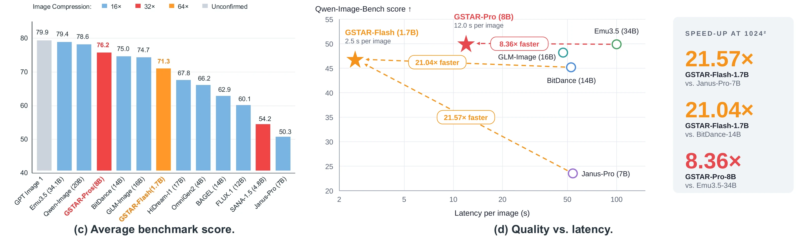
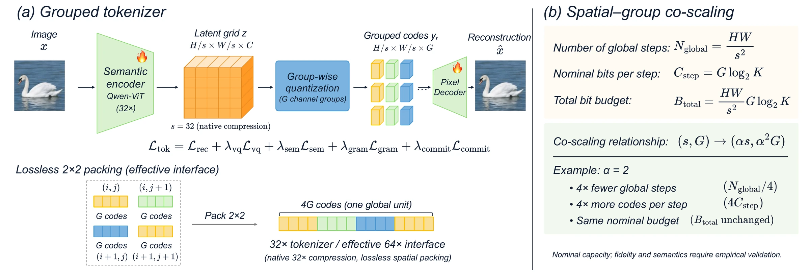
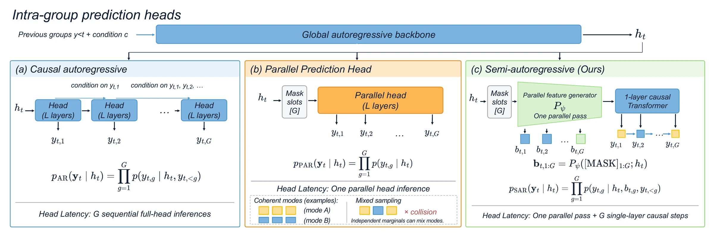
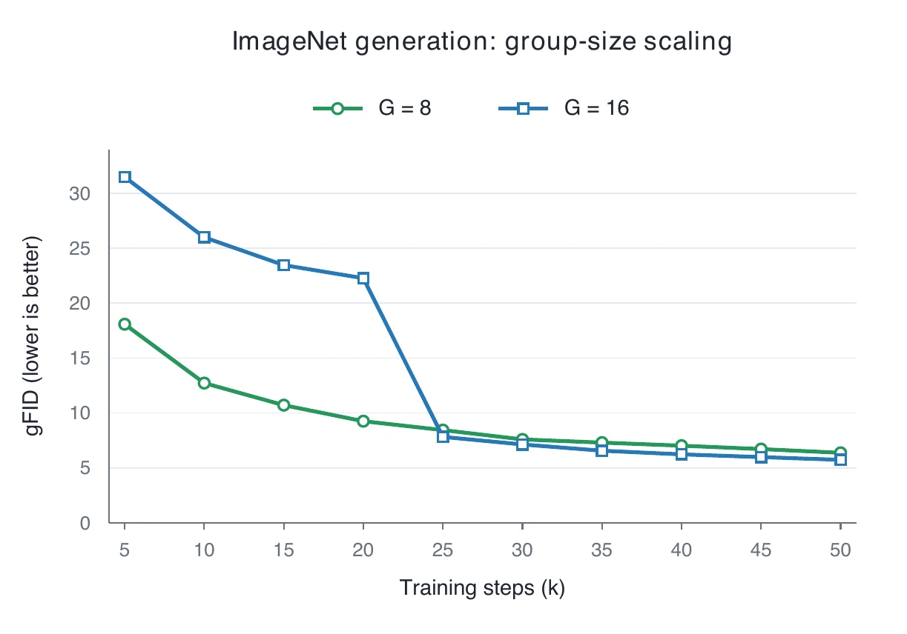
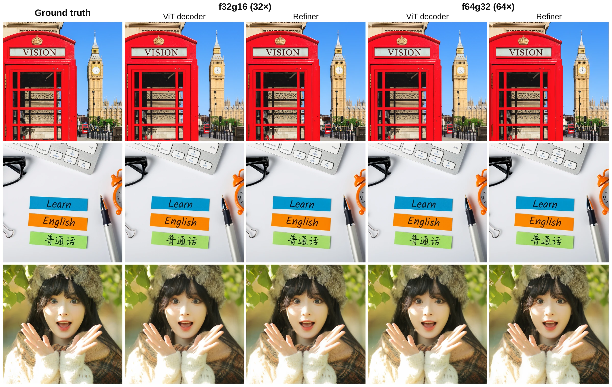
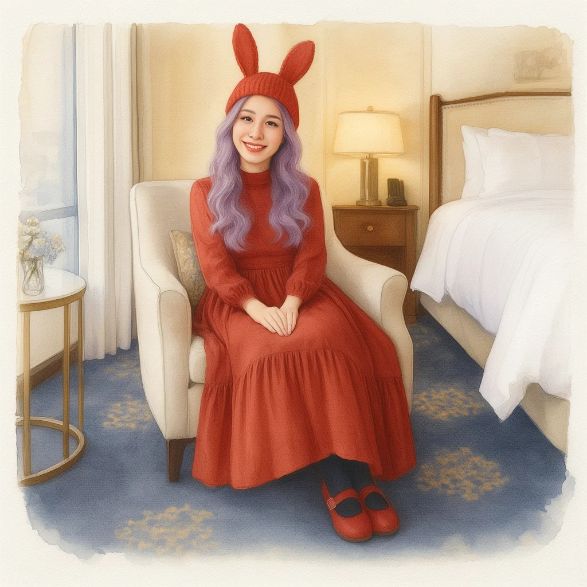
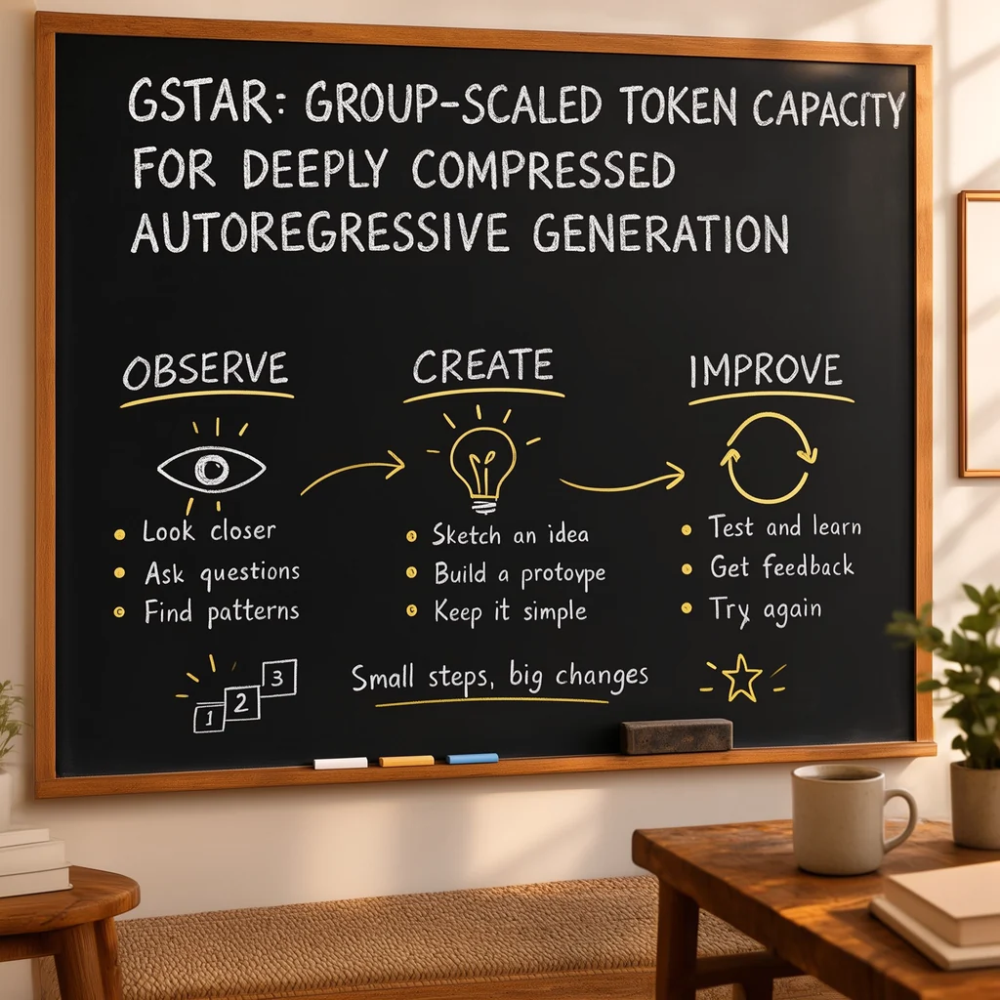

Spatial–group co-scaling
When per-axis compression grows by α, grow the group size by α². Global steps fall by α² while the nominal bit budget B = (HW/s²)·G·log₂K stays fixed.
Group-Scaled Token Capacity for
Deeply Compressed Autoregressive Generation
1Peking University 2Meituan 3Shanghai Jiao Tong University 4Huazhong University of Science and Technology 5The Chinese University of Hong Kong 6Tsinghua University 7MBZUAI
*Equal contribution · †Project lead · ‡Corresponding author
Fewer spatial steps. More capacity per token.
High-quality autoregressive images in 2.5 seconds.
Text-to-image samples from GSTAR (paper Figure 1 and supplementary cases). Click to enlarge.

per 1024 × 1024 image
VS. PRIOR DISCRETE AR20×faster at 1024²
SPATIAL COMPRESSION64×effective · lossless 2×2 packing
QWEN-IMAGE-BENCH ↑50.07GSTAR-Pro-8B · 32×
DEMO
Captions are burned in. Download MP4 · Transcript (VTT)
ABSTRACT
Discrete autoregressive models offer a scalable framework for image generation. However, they face a fundamental trade-off: long token sequences preserve representation quality but slow generation, while aggressive spatial compression reduces representation capacity. Based on product quantization, we show that, under a fixed nominal information budget, group size should scale quadratically with the per-axis spatial compression factor.
Building on this principle, we propose GSTAR, a spatial–group co-scaling framework that enables 32× and even effective 64× compression while preserving strong reconstruction, understanding, and generation performance. Since larger groups introduce intra-group dependencies that must be modeled efficiently, we analyze their impact on inference latency and generation quality and introduce a semi-autoregressive decoder that combines parallel feature computation with lightweight causal modeling.
With these designs, our highly compressed models perform competitively with leading models across five representative text-to-image benchmarks (GenEval, DPG-Bench, PRISM, LongText-Bench, and Qwen-Image-Bench). At 1024 × 1024 resolution, our model delivers a 20× speedup over prior discrete autoregressive models, generating each image in 2.5 seconds on a single NVIDIA H200.
01 · METHOD
Keep the global autoregressive sequence short, and give each remaining position enough discrete codes to describe the image.
When per-axis compression grows by α, grow the group size by α². Global steps fall by α² while the nominal bit budget B = (HW/s²)·G·log₂K stays fixed.
Pack each 2×2 neighbourhood of a native 32× tokenizer into one global unit: 4× fewer steps, 4× more codes per step, and no re-quantization. This gives the effective 64× interface.
A parallel trunk computes features for all G slots in one pass; a single-layer, KV-cached causal Transformer keeps codes consistent. Near-parallel speed, causal-level quality.

Pick a spatial compression factor for a 1024 × 1024 image. Group size scales with s², so the total number of codes, and the nominal bit budget with K = 16,384, never changes. Only the number of sequential autoregressive steps does.
Illustration anchored at f32g8, the tokenizer behind GSTAR-Flash. Nominal capacity is a fixed-length bit count, not a guarantee of fidelity.
One global step emits 8 codes
Each global step must emit a tuple of G correlated codes. A causal head repeats the full head G times. A parallel head is fast but samples codes independently and can mix incompatible modes. GSTAR runs the heavy trunk once and keeps only a one-layer causal module sequential.

Timeline of the head for G = 16 codes. Wide blocks are full-head passes; thin blocks are the one-layer causal steps.
Paper Table 4: matched training, Qwen3-1.7B init, 32×, G = 16, latency per image at 512².
One parallel pass, then lightweight causal steps.
02 · RESULTS
GSTAR-Pro-8B uses a 32× tokenizer with G = 16. GSTAR-Flash-1.7B uses the effective 64× tokenizer with G = 32. Both are trained with PT → CT → SFT and support generation and editing.
| Model | Comp. | Params | GenEval ↑ | DPG ↑ | PRISM ↑ | LongText ↑ | Qwen-Image ↑ |
|---|
Paper Table 1. Click a score column to sort. PRISM: English overall (Qwen2.5-VL-72B judge), rescaled to 0–10. LongText: English subset. Qwen-Image: Qwen-Image-Bench overall (0–100). “—” = not reported.
At 32× with K = 16,384, increasing G steadily improves reconstruction and linear-probe accuracy. Larger groups converge more slowly at first, but G = 16 overtakes G = 8 on ImageNet from 25k steps and matches or beats it on text-to-image.
| G | rFID ↓ | gFID ↓ (50k) | Linear probe ↑ |
|---|---|---|---|
| 1 | 2.06 | 2.11 | 81.45 |
| 8 | 0.85 | 6.38 | 82.90 |
| 16 | 0.54 | 5.74 | 84.15 |
| 32 | 0.43 | 17.05 | 84.55 |
Paper Table 2 · ImageNet 256², LlamaGen Llama-XL generator.

Paper Figure 4 · ImageNet gFID during training.
| Tokenizer | Comp. | PSNR ↑ |
|---|---|---|
| VQGAN | 16× | 22.24 |
| IBQ | 16× | 23.39 |
| VAR | 16× | 23.43 |
| Emu3.5 | 16× | 23.82 |
| Open-MAGVIT2 | 16× | 23.98 |
| GSTAR f32g16 | 32× | 25.12 |
| GSTAR f64g32 | 64× | 23.90 |
ImageNet val, 512² (paper Table 9).
A Qwen3-1.7B LLaVA-OneVision model fed the discrete f32g16 tokens matches continuous Qwen-ViT features across eight understanding benchmarks.
Average of MathVista, RealWorldQA, MMStar, OCRBench, TextVQA, AI2D, ChartQA, DocVQA (paper Table 7).
Repacking f32g8 into f64g32 leaves reconstruction identical by construction, with a 4× shorter sequence and only a small change in generation quality.
| Setting | GenEval | DPG | PRISM |
|---|---|---|---|
| f32g8 | 0.806 | 82.49 | 5.30 |
| f64g32 | 0.789 | 80.44 | 5.13 |
Paper Table 8.

03 · EFFICIENCY
Shorter global sequences and a faster head cut the cost of the model itself; system work does the rest. Four cumulative optimizations compound to an 8.9× end-to-end speedup for GSTAR-Flash-1.7B at 1024².
Paper Figure 5. Batch 1, 1024², one NVIDIA H200, BF16, CFG 1.8, temperature 0.5, top-k 1024; median of 3 timed runs after 3 warm-ups.
04 · IMAGE EDITING
GSTAR-Pro-8B also edits images from text instructions, reaching 7.45 overall on GEdit-Bench (English), close to GPT-Image-1 (7.53) and Qwen-Image-Edit (7.56). Drag across each image to compare.

OriginalEditedRender the photo as a watercolor illustration, keeping the dress, hat, hair and room.

OriginalEditedSwap the blackboard heading for the GSTAR title while keeping chalk style and layout.
CITATION
@article{huang2026gstar,
title = {GSTAR: Group-Scaled Token Capacity for Deeply Compressed Autoregressive Generation},
author = {Huang, Xu and Huang, Ye and Li, Xiaotong and Yue, Zhengrong and Zou, Jialv and
Jing, Minhao and Li, Haodong and Yan, Wenhao and Luo, Yaxin and Wang, Duomin and Zhou, Daquan},
journal = {arXiv preprint},
year = {2026}
}